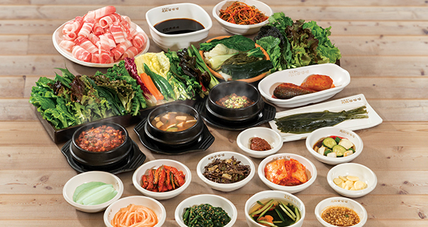
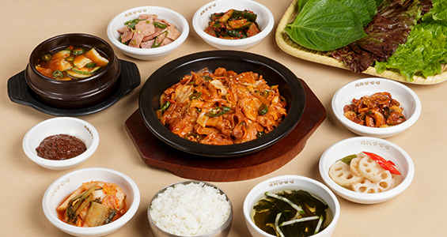
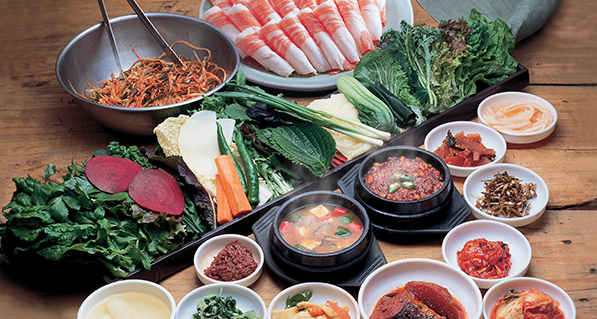

원조쌈밥집 메뉴
가장 대표적인 쌈밥정식, 차돌박이와 함께 먹는차돌쌈밥정식 그리고 원조쌈밥집에서만 맛 볼 수있는 특제 쌈장인 해물쌈장까지 즐기실 수있습니다.

Best
많은 쌈을 제공하는데 있어서
테이블의 공간을 최대한 활용하기 위한
연구 끝에 원조쌈밥집 만의 쌈채반을 자체 개발, 특허청 디자인 등록까지 마쳤습니다.
테이블의 공간을 최대한 활용하기 위한
연구 끝에 원조쌈밥집 만의 쌈채반을 자체 개발, 특허청 디자인 등록까지 마쳤습니다.
대패삼겹살 쌈밥정식
13.000 신선하고 푸짐한 쌈채소에 두툼해서 더욱
신선하고 푸짐한 쌈채소에 두툼해서 더욱맛있는 칼집삼겹살이 제공되는 메뉴
칼집 삼겹살 쌈밥정식
13,000

원조쌈밥집의 대표 메뉴인 대패삼겹살을
각종 야채와 특제 소스로 볶아
신선한 쌈과 함께 즐길 수 있는 메뉴
각종 야채와 특제 소스로 볶아
신선한 쌈과 함께 즐길 수 있는 메뉴
제육/간장 불고기 쌈밥정식
13,000

원조쌈밥집의 10여가지 다채로운
쌈채소와 다양한 반찬, 그리고 고소하고 부드러운 차돌박이까지 한 상에 먹을 수 있는 푸짐한 차돌박이정식.
쌈채소와 다양한 반찬, 그리고 고소하고 부드러운 차돌박이까지 한 상에 먹을 수 있는 푸짐한 차돌박이정식.
차돌박이 쌈밥정식
13,000건강하고 푸짐한 쌈채소
쌈을 싸먹는 것은 건강과 소망을 담은 음식이란의미를 갖는 우리 선인들의 문화입니다.
원조쌈밥집은 신선한 쌈을 푸짐하게 드실 수있도록 특별히 개발한 쌈채반에 담아 쌈을 제공합니다.

원조 쌈밥집만의 '쌈채반'
긴사각형의 모양으로 많은 종류의 쌈을 편히 골라 먹을수록 특수 개발 했습니다.
상추
철분과 필수 아미노산이 풍부하여
빈혈에 도움을 주며, 진통과 최면 효과가 있습니다.
깻잎
독특한 향이 입맛을 돋구어 주며 철분,비타민,칼슘 등이 풍부해 노화와 감기예방에 효과가 있습니다.
열무잎
여린 무에서 유래한 열무는
비타민A와 C가 풍부하여
혈액의 산성화를 방지하고 또한 인삼에도 들어있는
사포인 성분을 포함하고 있어 혈압을 조절하여 주는 효능이 있습니다.
적치커리
담즙을 증가시키는 작용이 있다고 하여
담석증의 특효약으로 이용하며 소화기능을 개선 합니다
쪽파
비타민C가 풍부하여 감기예방에 효과적, 또한 저열량,저지방으로 다이어트에 도움이 됩니다.
'쌈밥'
채소 위에 밥을 놓은 후 쌈장을 얹어 손으로 동그랗게
모아 싸서 먹는 우리나라 고유의 음식입니다
원조쌈밥집에서 다양한 쌈채소로 건강한 쌈밥을 즐겨보세요.
양배추
위궤양에 탁월한 효과가 있으며 피부미용에
도움을 줍니다.

고추
특유의 매운맛으로 중독성을 가지고 있으며 지방분해에 효과가 있으며 높은 비타민C로 면역강화에 도움을 줍니다.
적로즈
물감을 뿌린듯한 독특한 색이 있으며 풍부한 비타민C와 칼슘으로 위궤양과 간 질환 치료에 효과적 입니다.
케일
위궤양과 신경통 치료에 효과가 있으며 피를 만들어 주는 조혈작용,빈혈에 좋습니다.
원조쌈밥집의 시작
1993년 4월 고객들의 건강과 맛을 모두 만족 시켜 드리기 위한 설렘으로 원조쌈밥집이 첫 발을 내디뎠습니다.
20여 가지의 신선한 각종 쌈과 우연히 발견하게 된 원조쌈밥집의 대패삼겹살로 건강과 행복을 모두 느껴 보시기를 바랍니다.

창업안내
백종원 원조쌈밥집의가맹점 문의를 남겨주세요.
문의하기